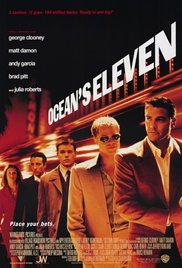
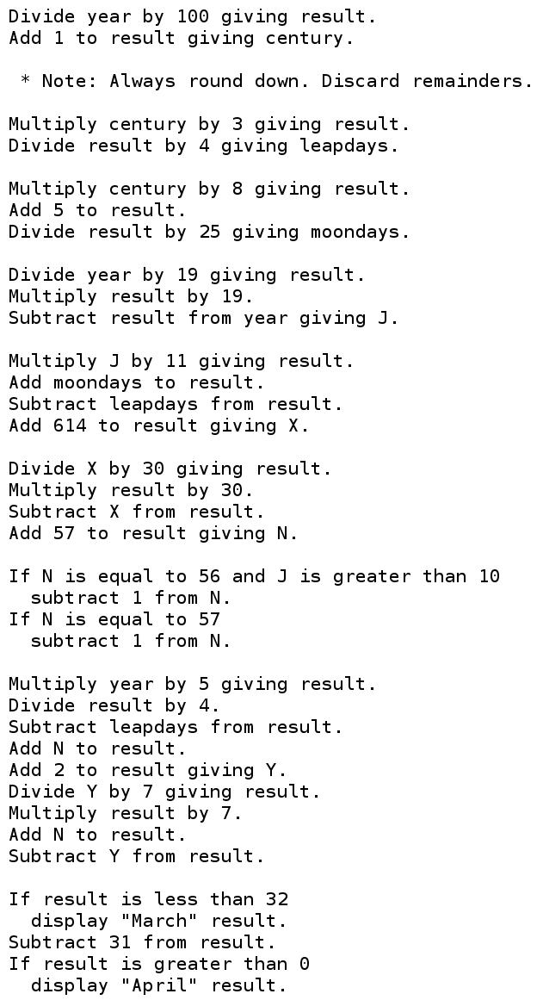
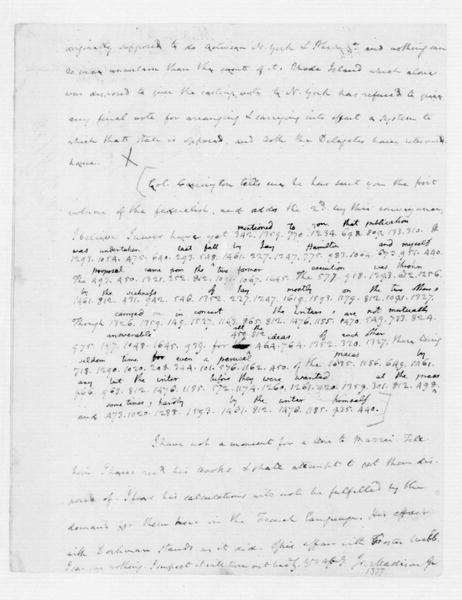

When Prohibition began, anti-alcohol crusaders demanded that the St. Louis Public Library burn every book that explained "the home production of alcohol for drinks". The librarian insisted on keeping the books but agreed to hide them from the "general public".
Instructions have always been a target of censorship. The censors say that it's bad, or that it might be bad, if people follow the instructions.
Censorship of other types of information almost always follows this pattern: the censors say that information must be banned because of what might happen when people receive and act upon the information. However, centuries of experience have taught us that the benefits of free speech are vastly larger than the benefits of censorship. This judgment is enshrined in the First Amendment.
A few well-established categories of communication are so clearly undesirable for society that they don't have First Amendment protection. For example, the First Amendment doesn't protect intentional solicitation of criminal activity: "I'll pay you $1000 to steal that car for me."
The Supreme Court is careful to define these categories narrowly, so that the categories don't threaten free speech. For example, imagine someone saying "To discourage terrorism we should torture suspected terrorists and behead terrorists' families." Can the government throw the speaker in jail for advocating violence? Answer: The speaker is protected if he isn't advocating imminent lawless action. Society has time to calmly discuss, and dismiss, the speaker's bad ideas.
As another example, the First Amendment usually doesn't protect false information. Contract law limits your freedom to make false promises. Fraud law limits your freedom to deceive people for profit. However, publishers would be terrified to say anything if they were exposed to libel lawsuits for innocent mistakes. That's why incorrect statements about public figures are protected by the First Amendment unless they're made with reckless disregard for the truth.
In Tom Clancy's 1994 novel Debt of Honor, a terrorist pilot armed with a knife seized control of an airplane loaded with fuel and flew the airplane into the United States Capitol.  It's easy to respond emotionally to this: obviously 9/11 was Clancy's fault; all books describing violence or other crime should be banned.
Eventually common sense kicks in. Burning books isn't going to stop terrorists and other criminals from coming up with their plots. On the contrary: the bad guys are perfectly capable of spotting security weaknesses on their own. Public discussion of security weaknesses has always been society's most effective tool for getting those weaknesses fixed.
Instructions that are specifically intended to aid criminals do lose First Amendment protection. For example, the First Amendment doesn't protect a murder-manual publisher who "intended to provide assistance to murderers and would-be murderers". But criminal intent is critical here. The government can't censor the Clancy books. It can't censor the Bond films. It can't censor a "Build Your Own Secret Bookcase Door" book, even though some readers might be criminals hiding from the police. It can't censor a "How to Fish" book, even though some readers might be terrorists who don't deserve to eat and who would be more easily caught if they were starving.
"Divide year by 100 giving result. Add 1 to result giving century." These two sentences are the start of a few dozen instructions for calculating the date of Easter. You can understand these instructions.  These instructions are software; this means that a computer can understand them too.
Our computers are extensions of our brains. They're often faster and more reliable than our brains are. That's why we tell our computers to run software, rather than following the same instructions by hand. That's also why we delegate to these devices our memories, the intimate details of our lives.
Have you heard the government arguing that it wants new powers to censor software? Think about what happens when you remove the computer from the picture. Could the government state the same rationale for censoring instructions followed by people? Does the First Amendment protect publication of the instructions despite this rationale? Usually the answer to both questions is yes.
Let's try an example. Apple is providing software for millions of people to encrypt their private files. If this software is doing its job then nobody else can understand the files. But a few of the people protected by this are criminals. The government claims that it's "going dark". Should Apple be allowed to publish this software?
 Let's remove the computer from the picture. Fact: Thomas Jefferson was a cryptographer. He distributed instructions that James Madison used, by hand, to encrypt private files (such as the partly encrypted letter back to Jefferson shown on the left). The effect of the encryption was that nobody else could understand the files.
Should a modern-day Jefferson be allowed to publish a "How to Encrypt" book? What if the FBI says that Jefferson is helping criminals?
Answer: The publisher is fully protected by the First Amendment. The publisher doesn't intend to help criminals. Sure, publishing encryption instructions might occasionally help criminals, but it does much more to stop criminals and to protect human rights.
If I were a lawyer trying to scare courts into creating a First Amendment exception for software, what would I do?
Answer: I would talk about bad software. Imagine software for destroying navigational systems on airplanes. Imagine a malware app that pretends to be a legitimate app for buying stocks but that, when you run it, ends up giving your money to a thief. Clearly the government needs to be able to make laws regarding software!
To demystify these examples, let's eliminate the computer. Imagine a book called "How to Destroy Navigational Systems on Airplanes". The courts already know how to handle this: intentional "aiding and abetting" of criminal activity isn't protected by the First Amendment. It doesn't matter whether the criminal who destroyed the navigational system was following instructions by hand, or was having his computer follow instructions on his behalf.
Or imagine a book that pretends to be a legitimate how-to book on buying stocks but that, when you follow its instructions, ends up giving your money to a thief. The courts know how to handle this too: fraud isn't protected by the First Amendment. The computer is again irrelevant.
So there's no real argument for creating a First Amendment exception for software. There is, meanwhile, a very strong argument against creating a First Amendment exception for software: namely, this exception would end up swallowing the entire First Amendment as computers learn to understand more and more types of communication. As the Ninth Circuit Court of Appeals wrote in 1999:
The distinction urged on us by the government would prove too much in this era of rapidly evolving computer capabilities. The fact that computers will soon be able to respond directly to spoken commands, for example, should not confer on the government the unfettered power to impose prior restraints on speech in an effort to control its "functional" aspects.
For decades the FBI and NSA have been trying and failing to convince Congress to outlaw strong encryption. Their arguments have always been the same: terrorism, drug dealers, terrorism, child pornography, terrorism, etc. Congress has always paid more attention to the counterarguments: most importantly, strong encryption will still be available for the terrorists, while efforts to weaken encryption are a security disaster for the rest of us. The FBI and NSA have also undermined their positions by establishing a track record of abusing their power: spying on their own love interests, for example, and spying on civil-rights leaders.
What do you do if you're a spy and Congress isn't doing what you want? You take matters into your own hands!
The NSA convinced the State Department to declare that encryption software was a "munition" under the "Arms Export Control Act", and that disclosing encryption software to a foreigner without a license was an illegal "export". The government's stated goal was to "control the widespread foreign availability of cryptographic devices and software which might hinder its foreign intelligence collection efforts".
Let's again imagine this without the computer. The State Department declares that modern-day Jefferson's how-to book on encryption is a "munition" under the Arms Export Control Act, and that disclosing Jefferson's instructions to a foreigner without a license is an illegal "export". The government's goal is to "control the widespread foreign availability" of encryption instructions "which might hinder its foreign intelligence collection efforts". The computer is once again irrelevant.
This isn't just a hypothetical analogy. For many years the government claimed that encryption instructions for humans were controlled by the Arms Export Control Act. For example, in 1977, NSA employee Joseph Meyer told the organizers of a cryptographic conference that they would be subject to prosecution. In 1993 the State Department officially classified a piece of cryptographic software and a cryptographic paper as "munitions". Two years later, after being dragged into court, the State Department changed its mind regarding the paper, an incident that the judge called "disquieting".
Fundamentally, the FBI and NSA would like to censor books and papers for the same reasons that they would like to censor software. The only reason that the government gave up on censoring books and papers was in an attempt to avoid First Amendment scrutiny: everyone can see that books and papers are covered by the First Amendment, whereas most people find software to be something mysterious and incomprehensible.
Back to the court case. The judge focused on software, and found that the government's regulations were an "unconstitutional prior restraint in violation of the First Amendment". The government had argued that software doesn't qualify for First Amendment protection, but the judge found that "source code is speech":
Contrary to defendants' suggestion, the functionality of a language does not make it any less like speech. ... Instructions, do-it-yourself manuals, recipes, even technical information about hydrogen bomb construction, see United States v. The Progressive. Inc., 467 F. Supp. 990 (W.D. Wisc. 1979), are often purely functional; they are also speech. ...
The music inscribed in code on the roll of a player piano is no less protected for being wholly functional. Like source code converted to object code, it "communicates" to and directs the instrument itself, rather than the musician, to produce the music. That does not mean it is not speech. Like music and mathematical equations, computer language is just that, language, and it communicates information either to a computer or to those who can read it.
Defendants argue in their reply that a description of software in English informs the intellect but source code actually allows someone to encrypt data. Defendants appear to insist that the higher the utility value of speech the less like speech it is. An extension of that argument assumes that once language allows one to actually do something, like play music or make lasagne, the language is no longer speech. The logic of this proposition is dubious at best. Its support in First Amendment law is nonexistent.
In response, the NSA convinced the Department of Commerce to set up suspiciously similar new regulations under the "International Emergency Economic Powers Act". The judge found that these new regulations were also unconstitutional.
The government appealed to the Ninth Circuit Court of Appeals, which again found that the regulations were unconstitutional. A side comment from the court recognized the dawn of a golden age of surveillance:
In this increasingly electronic age, we are all required in our everyday lives to rely on modern technology to communicate with one another. This reliance on electronic communication, however, has brought with it a dramatic diminution in our ability to communicate privately. Cellular phones are subject to monitoring, email is easily intercepted, and transactions over the internet are often less than secure. Something as commonplace as furnishing our credit card number, social security number, or bank account number puts each of us at risk. Moreover, when we employ electronic methods of communication, we often leave electronic "fingerprints" behind, fingerprints that can be traced back to us. Whether we are surveilled by our government, by criminals, or by our neighbors, it is fair to say that never has our ability to shield our affairs from prying eyes been at such a low ebb.
In another case against the same regulations, the Sixth Circuit Court of Appeals also found that the regulations were unconstitutional.
Fast forward to 2016. The FBI has found another way to apply pressure to software publishers: "You provided software that was used to encrypt this data. The All Writs Act says that you have to help us decrypt it!"
The FBI is, for example, trying to use the All Writs Act to conscript Apple into
When I say "anti-encryption", what I mean is that if this new software works then maybe the FBI will be able to understand the encrypted files stored on that iPhone. Nobody expects this iPhone to actually have any files of interest (Farook also owned, and destroyed, a personal iPhone), but other law-enforcement agencies have expressed their eagerness to use the same software against drug dealers.
Let's imagine the same scenario without computers. Jefferson's "How to Encrypt" instructions are being used by Madison and many other innocent people, but they're also being used by evil Farook. As part of a sting operation against Farook, the FBI is demanding that Jefferson
The FBI hopes that Farook, seeing Jefferson's signature and not realizing what's going on, will be fooled into following the anti-encryption instructions, so maybe the FBI will be able to understand Farook's files. Actually, everyone expects that Farook already destroyed all of the interesting files, but other law-enforcement agencies are eager to reuse Jefferson's false signature against drug dealers.
Jefferson, however, doesn't want to write or sign these anti-encryption instructions. He considers these instructions "too dangerous to create". Is Jefferson free to say what he wants if what he wants to say is nothing at all?
The Supreme Court says yes: freedom of speech includes "both what to say and what not to say". There are some exceptions, but the exceptions are very far from the Jefferson case. To summarize, Jefferson has a First Amendment right to avoid writing, and to avoid signing, the instructions demanded by the government.
Apple has the same First Amendment right. The distinction between software and other instructions isn't relevant to the free-speech analysis.
My guess is that courts will say no to the FBI interpretation of the All Writs Act, without reaching the First Amendment issues. But this obviously won't be the end of government efforts to control software publishers. Fortunately, just like the publishers of how-to books, software publishers are protected by the First Amendment.